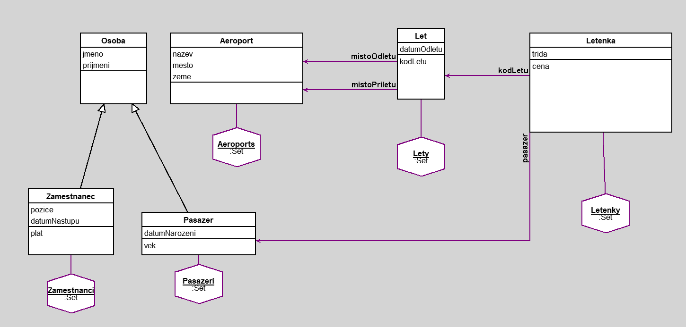

Aerolinka
author(s): Sergiu Nica
Daný projekt reprezentuje objektový model aerolinie. Aerolinie provozuje lety, takže bylo logické vytvořit třídu Let a další třídy týkající se letového cestování. Třída Let obsahuje důležité údaje, jako jsou místo odletu a místo příletu, které jsou vázané na objekty třídy Aeroport (synonymum k slovu letiště) a datum odletu. Pomocí metody byla vytvořena instanční proměnná - kodLetu, která může být používána jako identifikátor. Byla vytvořena třída Osoby, která je nad třídou 2 potomků - Zaměstnanec a Pasažer. Osoba obsahuje klasické údaje o lidech - jméno a příjmení. Třída Zaměstnanec navíc obsahuje proměnnou pozice a datum nastoupení, které slouží k výpočtu platu každého zaměstnance (pilot má základ 70000, mechanik 50000, letuška 35000 a odbavovací personál 32000, a následně se bere v potaz i doba zaměstnání; nad 2 roky dostávají bonus 5 procent a nad 4 roky a více 9 procent). Třída Cestující obsahuje datum narození, které je vstupním parametrem pro výpočet věku. K cestujícím je přivázána vazba objekty z třídy Letenka. Tato třída je vázaná i na objekty třídy Let a obsahuje metodu pro výpočet ceny na základě cestovních tříd (ekonomická je za 1000 Kč, business je za 1800 Kč, first class je za 2700 Kč) a věku cestujícího (děti mají 15 procent slevu). První dotaz slouží k zjištění cestujících, kteří letí z Česka a mají třídu First Class (např. pro poskytování lepších služeb potřebujeme vědět, kolik bude prémiových cestujících). Další dotaz je pro zjištění vnitrostátních letů. Třetí dotaz je pro zjištění dospělých s ekonomickou třídou (Zjištění popularity levných letů).
Workspace
Letenky select: [: le | (le trida = 'Prvni') & (le kodLetu mistoOdletu zeme = 'Cesko')]
Let allInstances select: [: l | (l mistoPriletu zeme) = (l mistoOdletu zeme)]
Letenky select: [: le | (le pasazer vek > 18) & (le trida = 'Ekonomická')]
Workspace Objects
-
Aeroports :Set
-
Letenky :Set
-
Lety :Set
-
Pasazeri :Set
-
Zamestnanci :Set
Script
Pasazeri := Set new.
Zamestnanci := Set new.
Aeroports := Set new.
Lety := Set new.
Letenky := Set new.
p1 := Pasazer new.
p1 jmeno: 'Karel'; prijmeni: 'Vondrak'; datumNarozeni: '12-12-1985' asDate.
p2 := Pasazer new.
p2 jmeno: 'Klara'; prijmeni: 'Sondrova'; datumNarozeni: '01-06-1995' asDate.
p3 := Pasazer new.
p3 jmeno: 'Jan'; prijmeni: 'Cerny'; datumNarozeni: '05-21-2010' asDate.
p4 := Pasazer new.
p4 jmeno: 'Adam'; prijmeni: 'Borovský'; datumNarozeni: '11-30-2001' asDate.
p5 := Pasazer new.
p5 jmeno: 'Michaela'; prijmeni: 'Kolova'; datumNarozeni: '08-27-1978' asDate.
p6 := Pasazer new.
p6 jmeno: 'Monika'; prijmeni: 'Dvorakova'; datumNarozeni: '10-15-1987' asDate.
p7 := Pasazer new.
p7 jmeno: 'Ondrej'; prijmeni: 'Lingr'; datumNarozeni: '06-15-2015' asDate.
p8 := Pasazer new.
p8 jmeno: 'Martin'; prijmeni: 'Sevcik'; datumNarozeni: '04-30-1997' asDate.
p9 := Pasazer new.
p9 jmeno: 'Linda'; prijmeni: 'Vrchova'; datumNarozeni: '12-05-1998' asDate.
p9 := Pasazer new.
p9 jmeno: 'Alena'; prijmeni: 'Lomova'; datumNarozeni: '01-28-2002' asDate.
p10 := Pasazer new.
p10 jmeno: 'Valentyna'; prijmeni: 'Koralova'; datumNarozeni: '09-21-1998' asDate.
p11 := Pasazer new.
p11 jmeno: 'Michal'; prijmeni: 'Komar'; datumNarozeni: '03-27-2019' asDate.
p12 := Pasazer new.
p12 jmeno: 'Lucie'; prijmeni: 'Vaculikova'; datumNarozeni: '02-01-2000' asDate.
p13 := Pasazer new.
p13 jmeno: 'Nikola'; prijmeni: 'Sevcikova'; datumNarozeni: '11-11-1999' asDate.
p14 := Pasazer new.
p14 jmeno: 'Zdenek'; prijmeni: 'Kaucky'; datumNarozeni: '09-02-1998' asDate.
z1 := Zamestnanec new.
z1 jmeno: 'Michal'; prijmeni: 'Dvorak'; pozice: 'pilot'; datumNastupu: '01-01-2015' asDate.
z2 := Zamestnanec new.
z2 jmeno: 'Ondrej'; prijmeni: 'Vorel'; pozice: 'pilot'; datumNastupu: '10-01-2023' asDate.
z3 := Zamestnanec new.
z3 jmeno: 'Aneta'; prijmeni: 'Svobodná'; pozice: 'letuska';datumNastupu: '05-15-2022' asDate.
z4 := Zamestnanec new.
z4 jmeno: 'Jan'; prijmeni: 'Horak'; pozice: 'mechanik'; datumNastupu: '05-06-2016' asDate .
z5 := Zamestnanec new.
z5 jmeno: 'Michaela'; prijmeni: 'Kucerova'; pozice: 'letuska'; datumNastupu: '11-30-2019' asDate.
z6 := Zamestnanec new.
z6 jmeno: 'Kryštof'; prijmeni: 'Placky'; pozice: 'odbavovac'; datumNastupu: '01-01-2011' asDate.
z7 := Zamestnanec new.
z7 jmeno: 'Marketa'; prijmeni: 'Nemcova'; pozice: 'odbavovac'; datumNastupu: '01-05-2023' asDate.
a1 := Aeroport new.
a1 nazev: 'Prazske'; mesto: 'Praha'; zeme: 'Cesko'.
a2 := Aeroport new.
a2 nazev: 'Brnenske'; mesto: 'Brno'; zeme: 'Cesko'.
a3 := Aeroport new.
a3 nazev: 'Berlinske'; mesto: 'Berlin'; zeme: 'Nemecko'.
a4 := Aeroport new.
a4 nazev: 'Londynske'; mesto: 'Londyn'; zeme: 'Velka Britanie'.
a5 := Aeroport new.
a5 nazev: 'Parizske'; mesto: 'Pariz'; zeme: 'Francie'.
l1 := Let new.
l1 mistoOdletu: a1.
l1 mistoPriletu: a2.
l1 datumOdletu: '24-APR-2023' asDate.
l2 := Let new.
l2 mistoOdletu: a4.
l2 mistoPriletu: a1.
l2 datumOdletu: '06-JUN-2023' asDate.
l3 := Let new.
l3 mistoOdletu: a2.
l3 mistoPriletu: a5.
l3 datumOdletu: '18-MAY-2023' asDate.
l4 := Let new.
l4 mistoOdletu: a1.
l4 mistoPriletu: a3.
l4 datumOdletu: '21-DEC-2023' asDate.
l5 := Let new.
l5 mistoOdletu: a2.
l5 mistoPriletu: a3.
l5 datumOdletu: '02-FEB-2023' asDate.
l6 := Let new.
l6 mistoOdletu: a1.
l6 mistoPriletu: a5.
l6 datumOdletu: '30-JAN-2023' asDate.
l7 := Let new.
l7 mistoOdletu: a3.
l7 mistoPriletu: a4.
l7 datumOdletu: '12-JUL-2023' asDate.
le1 := Letenka new.
le1 trida: 'Prvni'.
le1 pasazer: p1.
le1 kodLetu: l1.
le2 := Letenka new.
le2 trida: 'Business'.
le2 pasazer: p2.
le2 kodLetu: l1.
le3 := Letenka new.
le3 trida: 'Ekonomická'.
le3 pasazer: p3.
le3 kodLetu: l2.
le4 := Letenka new.
le4 trida: 'Prvni'.
le4 pasazer: p4.
le4 kodLetu: l2.
le5 := Letenka new.
le5 trida: 'Ekonomická'.
le5 pasazer: p5.
le5 kodLetu: l3.
le6 := Letenka new.
le6 trida: 'Ekonomická'.
le6 pasazer: p6.
le6 kodLetu: l3.
le7 := Letenka new.
le7 trida: 'Business'.
le7 pasazer: p7.
le7 kodLetu: l4.
le8 := Letenka new.
le8 trida: 'Prvni'.
le8 pasazer: p8.
le8 kodLetu: l4.
le9 := Letenka new.
le9 trida: 'Ekonomická'.
le9 pasazer: p9.
le9 kodLetu: l5.
le10 := Letenka new.
le10 trida: 'Ekonomická'.
le10 pasazer: p10.
le10 kodLetu: l5.
le11 := Letenka new.
le11 trida: 'Ekonomická'.
le11 pasazer: p11.
le11 kodLetu: l1.
le12 := Letenka new.
le12 trida: 'Ekonomická'.
le12 pasazer: p12.
le12 kodLetu: l2.
le13 := Letenka new.
le13 trida: 'Ekonomická'.
le13 pasazer: p13.
le13 kodLetu: l5.
le14 := Letenka new.
le14 trida: 'Business'.
le14 pasazer: p14.
le14 kodLetu: l4.
Pasazeri add: p1; add: p2; add: p3; add: p4; add: p5; add: p6; add: p7; add: p8; add: p9; add: p10; add: p11; add: p12; add: p13; add: p14.
Zamestnanci add: z1; add: z2; add: z3; add: z4; add: z5; add: z6; add: z7.
Aeroports add: a1; add: a2; add: a3; add: a4; add: a5.
Lety add: l1; add: l2; add: l3; add: l4; add: l5; add: l6; add: l7.
Letenky add: le1; add: le2; add: le3; add: le4; add: le5; add: le6; add: le7; add: le8; add: le9; add: le10; add: le11; add: le12; add: le13; add: le14.
Diagram

Classes
Aeroport
|
instance variables
mesto :String
nazev :String
zeme :String
|
methods
initialize
mesto
mesto:
nazev
nazev:
zeme
zeme:
|
|
|
code of non-accessing methods:
Let
|
instance variables
datumOdletu :Date
mistoOdletu :Object
mistoPriletu :Object
|
methods
datumOdletu
datumOdletu:
initialize
kodLetu
mistoOdletu
mistoOdletu:
mistoPriletu
mistoPriletu:
|
|
|
code of non-accessing methods:
-
initialize
"generated by Daskalos"
super initialize.
mistoOdletu := nil.
datumOdletu := nil.
mistoPriletu := nil.
-
kodLetu
| mistoOdletuKod mistoPriletuKod |
mistoOdletuKod := mistoOdletu mesto copyFrom: 1 to: 2.
mistoPriletuKod := mistoPriletu mesto copyFrom: 1 to: 2.
^(mistoOdletuKod , mistoPriletuKod , '2023') asUppercase
Letenka
|
instance variables
kodLetu :Object
pasazer :Object
trida :String
|
methods
cena
initialize
kodLetu
kodLetu:
pasazer
trida
trida:
|
|
|
code of non-accessing methods:
-
cena
| zaklad konecnaCena |
zaklad := trida = 'Ekonomická'
ifTrue: [1000]
ifFalse:
[trida = 'Business'
ifTrue: [1800]
ifFalse: [trida = 'Prvni' ifTrue: [2700] ifFalse: [0]]].
konecnaCena := pasazer vek < 18 ifTrue: [zaklad * 0.85] ifFalse: [zaklad].
^konecnaCena
-
initialize
"generated by Daskalos"
super initialize.
trida := nil.
pasazer := nil.
kodLetu := nil.
Osoba
|
instance variables
jmeno :String
prijmeni :String
|
methods
initialize
jmeno
jmeno:
prijmeni
prijmeni:
|
|
|
code of non-accessing methods:
Zamestnanec
|
instance variables
datumNastupu :Date
pozice :String
|
methods
datumNastupu
datumNastupu:
initialize
plat
pozice
pozice:
|
|
|
code of non-accessing methods:
-
initialize
"generated by Daskalos"
super initialize.
pozice := nil.
datumNastupu := nil.
-
plat
| vypocet dobaZamestnani |
vypocet := pozice = 'pilot'
ifTrue: [70000]
ifFalse:
[pozice = 'mechanik'
ifTrue: [50000]
ifFalse: [pozice = 'letuska' ifTrue: [35000] ifFalse: [32000]]].
dobaZamestnani := (Date today year - datumNastupu year) * 12
+ (Date today monthIndex - datumNastupu monthIndex).
vypocet := dobaZamestnani >= 48
ifTrue: [vypocet * 1.09]
ifFalse: [dobaZamestnani >= 24 ifTrue: [vypocet * 1.05] ifFalse: [vypocet]].
^vypocet
Pasazer
|
instance variables
datumNarozeni :Date
|
methods
datumNarozeni
datumNarozeni:
initialize
vek
|
|
|
code of non-accessing methods:
Links
Data file and
class source.
Generated by Daskalos - Object Modeling Tutor (C) 2006 V. Merunka
May 1, 2023